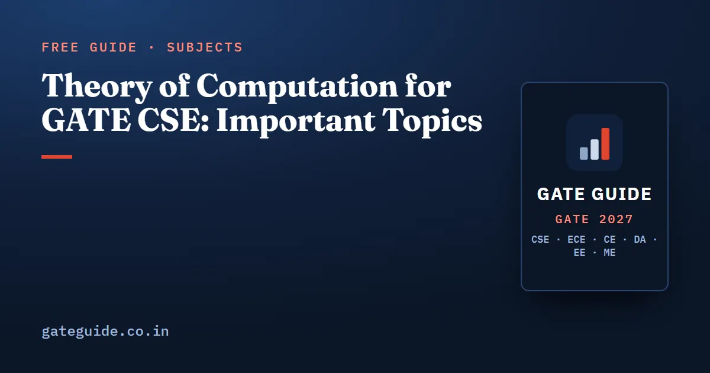

Theory of Computation for GATE CSE: Important Topics

The most important Theory of Computation (TOC) topics for GATE CSE 2027 are deciding which languages are regular or context-free, regular expressions, minimum-state DFAs, decidability, CFGs and closure properties. TOC reliably carries about 7–9 marks. The topics barely change from year to year. The skill being tested is short, exact reasoning.
In this guide
Key takeaways
- The TOC syllabus is unchanged for 2027 and has been essentially stable since 2016.
- Analyst compilations put TOC at 6–10 marks in every full paper from 2009 to 2025, most often 7–9.
- Four question forms have supplied most of the marks since 2018: which languages are regular or CFL, the minimum-state DFA NAT, closure and decidability statements, and "what language does this generate".
- Since 2021, MSQ has become the default format for classification and closure questions. One wrong tick costs the whole question.
- The specific languages change every year, but the tricks and traps repeat.
What the GATE 2027 TOC syllabus says
The official 2027 syllabus reads: "Regular expressions and finite automata. Context-free grammars and push-down automata. Regular and context-free languages, pumping lemma. Turing machines and undecidability."
This is identical to 2026. TOC also supports Compiler Design, which uses grammars, ambiguity and parsing, so the effort helps with two subjects. See Compiler Design important topics. Confirm the wording at gate2027.iitm.ac.in.
How many marks TOC carries
These figures come from third-party analyst compilations (gateexam.info, GeeksforGeeks, careers360, goclasses.in, PW), not official data. Questions on grammars sometimes get counted under Compiler Design, so figures vary by 1–2 marks.
| Measure | TOC marks (approx.) |
|---|---|
| Range in full papers 2009–2025 | 6 to 10 (single sets in 2014–2015 went as low as 3) |
| Most common value | 9 |
| Average 2009–2017 | about 7.6 |
| Average 2018–2026 | about 8.0 |
| 2026 Shift 1 | 7 (1 one-mark + 3 two-mark questions) |
| 2026 Shift 2 | 3 questions (about 4–6 marks, estimated) |
TOC behaves like a fixed slot of 7–9 marks. There is no rising or falling trend, only a small dip in 2026. For the full picture across subjects, see GATE CSE subject-wise weightage.
The most-tested TOC topics and how they are asked
The years are reconstructed from PYQ repositories and are approximate.
1. Which languages are regular, CFL or neither
This is the most reliable TOC question. It has appeared essentially every year since 2004. You get four languages in set-builder form and must mark which are regular (or context-free, or not context-free). Since 2021 it usually comes as a 2-mark MSQ.
The recurring trick is a "free middle" segment. When part of a string can be any string, the constraint on the rest may collapse to something a finite automaton can check. Comparisons of unbounded counts are never regular. Three-way count equalities and copy languages like are not context-free. A good test: how many independent counters would a machine need, and could a single stack handle them in LIFO order?
2. Regular expressions
Two forms dominate: pick the regular expression for a language described in words, or say what a given expression or automaton generates. Seen in 2003, 2010, 2014, 2016, 2022 and 2026 Shift 1, and approx. in several other years. Test each option with three strings: , the shortest string that should be in the language, and the shortest that should not.
3. Minimum-state DFA
This appeared in about 13 of 27 years and was a regular fixture from 2015 to 2023. It is usually a 2-mark NAT. Typical languages: residue or divisibility conditions, substring or suffix conditions, and positional conditions such as "the -th symbol from the right".
A quick example: strings over with an even number of 's and a number of 's divisible by 3 need states, because the two counters are independent. When conditions interact, states can merge, so always check for merges before you answer.
4. Decidable vs undecidable problems
This appeared in about 14 of 27 years, with a steady run from 2012 to 2021. You get four problems about DFAs, CFGs or Turing machines and pick the decidable ones. The pool is small: membership, emptiness, finiteness, universality, equivalence, inclusion, regularity, ambiguity and a few halting variants. Newer versions (2020, 2021) define sets of Turing machine encodings with step bounds, which is Rice's theorem in disguise.
5. CFG language, ambiguity and parse trees
Identify the language of a short grammar, find the string it cannot generate, or count parse trees. Analysts reported CFG questions in both 2026 shifts, including one in Shift 2 that overlapped with LL(1) parsing.
6. Closure properties
True/false statements about regular, DCFL, CFL, recursive and RE languages under union, intersection, complement and other operations. These appeared in about 13 of 27 years and are now mostly MSQs.
Rising forms
NATs that count strings of a given length (2021, 2024) and Turing machine encoding languages with step bounds (2020, 2021) have grown. Pure "trace this PDA" questions and regular grammar equations have faded.
TOC priority table for GATE 2027
These tiers come from an eight-factor weighted score: historical and recent frequency, variety of question forms, syllabus centrality, time since last asked, format fit, IIT Madras history and other evidence. They set study priority, not a guarantee.
| Tier | Topics | Likely format |
|---|---|---|
| Tier 1 (very high) | Language-class identification; regular expressions; minimum-state DFA; decidability lists; CFG language, ambiguity and parse-tree counts; closure properties | MSQ, NAT, MCQ (1–2 marks) |
| Tier 2 (high) | RE vs recursive, Rice's theorem, reductions; PDA (DPDA vs NPDA, acceptance, language of a PDA); NFA to DFA bounds; counting strings of length ; TM variants and computable functions | MCQ, MSQ, NAT |
| Tier 3 (moderate) | Pumping lemma as a direct question; Myhill–Nerode and minimisation; DCFL vs CFL subtleties; Kleene closure and powers of a language; Chomsky hierarchy, CSL, LBA | MCQ / NAT |
| Tier 4 (lower) | Countability; regular grammars | MCQ |
The book's TOC chapter scores all 18 subtopics individually, sets out the likely question shapes for each top topic, and includes 40 practice questions (14 MCQ, 13 MSQ, 13 NAT) with full solutions. See what the book includes.
Closure and decidability at a glance
Most TOC MSQs come down to these facts, so learn them cold.
| Class | Union | Intersection | Complement | Concatenation, star |
|---|---|---|---|---|
| Regular | Yes | Yes | Yes | Yes |
| DCFL | No | No | Yes | No |
| CFL | Yes | No | No | Yes |
| Recursive | Yes | Yes | Yes | Yes |
| RE | Yes | Yes | No | Yes |
Also remember: CFL intersected with a regular language is CFL. Regular languages are not closed under infinite union or under taking subsets. For decidability: every standard question about DFAs and regular expressions is decidable. For CFGs, membership, emptiness and finiteness are decidable, while ambiguity, universality, equivalence and regularity are not. For Turing machines, syntactic or step-bounded properties are decidable, and non-trivial properties of the accepted language are not (Rice's theorem).
Common TOC traps
- The dead state. Check whether the minimal DFA needs a dead state. Complementing can turn a dead state into an accepting one that must be counted (2015).
- False product size. Conditions that look independent may merge. "Number of a's and number of b's have the same parity" is just "length is even", so 2 states.
- Position from the right vs left. "-th symbol from the right" needs states. "-th from the left" needs , including the dead state.
- Subsets. A subset of a regular language need not be regular.
- Unions. If is regular, that does not make and regular.
- CFL complement. The complement of a CFL need not be CFL, but it is always recursive. DCFLs are closed under complement.
- , not .
- Ambiguity. An ambiguous grammar is not the same as an inherently ambiguous language.
- Reduction direction. If ( reduces to ), decidability passes from down to , and undecidability passes from up to .
- "Some input" vs "all inputs". A property checkable on some input within bounded steps is RE. "On all inputs" is co-RE.
- Pumping lemma. It is necessary, not sufficient. A language can satisfy it and still be non-regular.
- MSQ all-or-nothing. One wrong tick loses the whole question, so leave out any option you have not verified. See how to attempt MSQs.
What past IIT Madras papers suggest
IIT Madras set the CS paper in 2003, 2011 and 2019. TOC was never under-represented: 9 marks in 2011 (top of the normal range), 6–8 in 2019, and heavy content in 2003. All three had at least one language-classification question and at least one on machine power or undecidability. The 2019 paper also asked two rare forms: a numeric pumping-length question and a countability question. Three papers are too few to predict from, so treat 2027 as a normal 7–9 mark year and do not ignore the rare topics completely.
How to prepare TOC for GATE 2027
- Automata and regular expressions first. Build minimal DFAs for residue, substring and positional languages until you count states correctly every time, including the dead state.
- Classification drills. Take four languages at a time and label each regular, DCFL, CFL or not CFL, with a one-line reason. This is the highest-yield habit in TOC.
- Memorise the closure and decidability tables above, then practise MSQ statement sets without looking.
- Grammars and PDAs. Write the first few strings of a grammar, generalise, and learn DPDA vs NPDA facts.
- Turing machines last. Rice's theorem, RE vs recursive inferences and reduction direction.
- Solve post-2018 PYQs in MSQ and NAT form. Older papers teach the same concepts, but newer ones show the format you will face. Pure PDA tracing and grammar equations are low priority.
TOC and Algorithms are the two subjects analysts rate hardest, so give both regular timed practice. The book's 10 full mock tests include TOC in paper-length sets, which helps you pace the MSQs (details).
Frequently asked questions
What are the most important TOC topics for GATE CSE 2027?
The top tier is language-class identification (which languages are regular or context-free), regular expressions, minimum-state DFA counts, decidable versus undecidable problem lists, CFG language and ambiguity questions, and closure properties. Rice's theorem, PDA questions, NFA to DFA bounds and counting strings of a given length form the next tier.
How many marks does Theory of Computation carry in GATE CSE?
Third-party analyst compilations place TOC between 6 and 10 marks in every full paper from 2009 to 2025, most often 7 to 9 marks, or about four to six questions. GATE 2026 Shift 1 had 7 TOC marks. These are analyst figures, not official data, and differ by 1 to 2 marks.
Has the GATE 2027 TOC syllabus changed?
No. The Theory of Computation section is unchanged from 2026 and has been essentially the same since the 2016 revision. It covers regular expressions and finite automata, context-free grammars and push-down automata, regular and context-free languages with the pumping lemma, and Turing machines and undecidability.
Is TOC hard for GATE CSE?
Post-exam analyses rate TOC among the two most difficult subjects, along with Algorithms, because almost every question needs a short argument rather than a formula. The question forms repeat very regularly, though, so a candidate who practises the recurring forms can score reliably. MSQs on closure and decidability are all-or-nothing, which makes them harder than they look.
Is the pumping lemma important for GATE TOC?
It is named in the syllabus, but it is rarely asked as a direct question. It matters more as a tool for deciding whether a language is regular or context-free, which is asked in nearly every paper. Remember that the pumping lemma is a necessary condition, not a sufficient one.
Sources
- GATE 2027 official website (IIT Madras)
- GATE 2027 CS syllabus (official PDF)
- GATE Overflow previous year questions by topic
- GeeksforGeeks subject-wise weightage for GATE CS
- GeeksforGeeks GATE CSE 2026 Shift 1 paper analysis
Dates, fees and the syllabus are set by the GATE 2027 organising institute and can change. Always confirm at gate2027.iitm.ac.in.